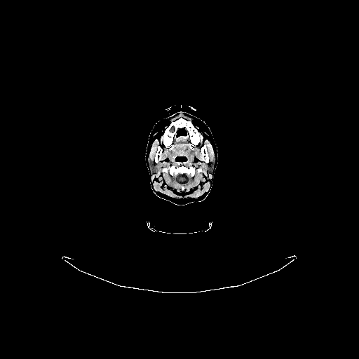
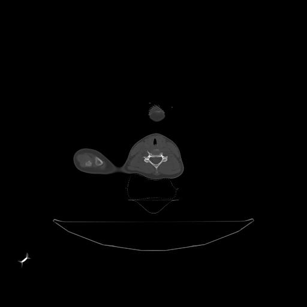
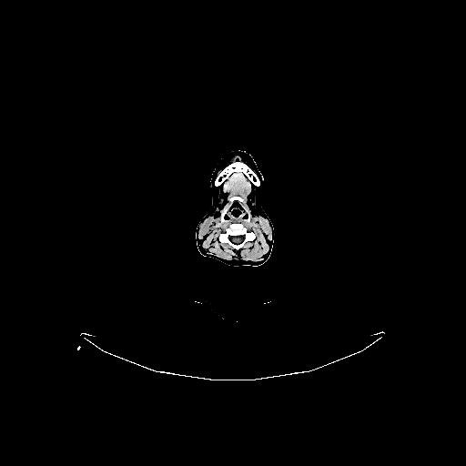
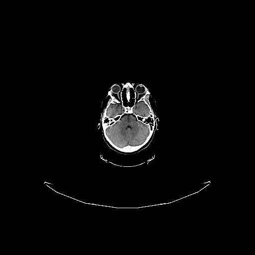
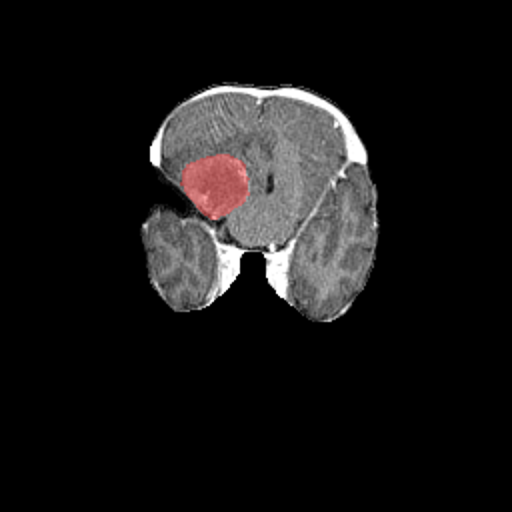
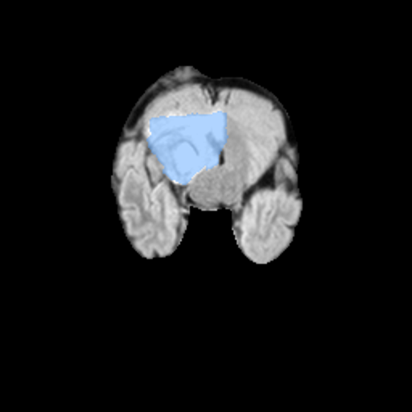

Cranial radiation therapy is planned on a CT simulation scan fused with MRI. CT supplies the electron density for dose calculation and the rigid bony reference for setup; MRI supplies the soft-tissue contrast needed to define the target and organs at risk. The same CT is read on different windows depending on the tissue of interest.


The rigid cranium makes the brain one of the most reproducible sites to set up: a bony match on the skull is an excellent surrogate for intracranial target position — a theme we return to on the verification page.
Working from inferior to superior, the lowest intracranial level shown here is the posterior fossa. Orient yourself first: anterior is at the top, and by radiologic convention the patient's right is on the left of the image.

At the posterior-fossa level, which CSF-filled structure sits in the midline between the brainstem and the cerebellum?
Higher up, the lateral ventricles and deep gray matter come into view — the workhorse level for orientation.
The falx cerebri should sit dead-center. Because it is a straight midline reference, a falx that appears tilted or off-center on a verification image is a fast flag for patient rotation.
Why is the falx cerebri a useful quick check for rotation on an axial image?
Near the vertex, the bodies of the lateral ventricles narrow and the white matter of the centrum semiovale dominates before the ventricles disappear entirely at the highest slices.

Reading a stack top-to-bottom in this way — convexity → ventricles → posterior fossa → skull base — is exactly how you confirm a target's craniocaudal position and check that no critical structure has been missed on a contour.
Re-windowing to bone at the skull base reveals the bony and air-filled anatomy that a soft-tissue window hides.
Dose-limiting OARs to recognize at these levels: the lenses (cataract risk), optic nerves and chiasm, brainstem, cochleae, and pituitary/hypothalamus. Each must be identified on the planning slices before it can be avoided.
Which window would you use to best evaluate the walls of the sphenoid sinus and skull-base foramina?
This is where MRI earns its place. The two sequences below come from an educational brain-metastasis case, each shown clean and again with its expert segmentation overlaid — the distinction between them drives how the target is drawn.


The clinical consequence: T1CE enhancement usually defines the GTV, while FLAIR shows edema that may or may not be included depending on intent (brain-met SRS often treats the enhancing lesion plus a tight margin, not the whole edema). Reading the right sequence for the right structure is the core skill.
On which MRI sequence does an enhancing brain metastasis (broken blood–brain barrier) appear brightest, typically defining the GTV?
Because the skull is rigid, cranial setup is verified primarily by bony matching against the reference DRR or planning CT:
Why is 6DoF couch correction especially valuable for cranial SRS?
You've read the brain top-to-bottom on real planning imagery — convexity, mid-ventricular, and posterior-fossa levels on brain window; the skull base on bone window; and the enhancing-core-versus-edema distinction on T1CE and FLAIR MRI — then tied it to rigid-skull bony verification with 6DoF.
Cross-reference: apply this to Brain Treatment Planning, or practice border identification in the CT Borders Game.